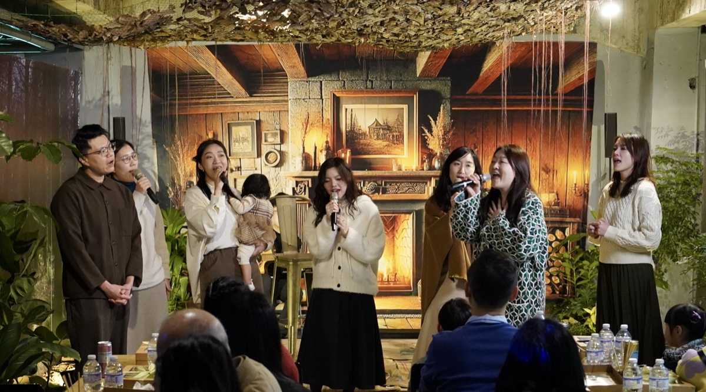

在溫柔的木質中 感受真實的愛與陪伴。
每月一次的職場講堂，邀請各行各業的專業職人，真實分享職場歷程與人生故事，以不同視角看見上帝把我們擺在職場中的意義。點擊下方按鈕可以進入專屬頁面觀看更多照片與詳細影片紀錄。
結合咖啡、筆記本與職場智慧。我們探討如何在職場中活出信仰，分享彼此的挑戰與恩典。

一個用音樂創作來傳遞上帝心意的音樂團體，帶著最誠摯真實的生命，期待讓更多的人能在這樣的音樂中得滿足，與神相連。這裡有我們最新的敬拜影片與創作。